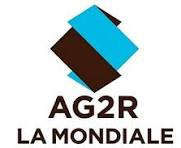

Bienvenue sur mon portfolio en ligne !
Dans le cadre de ma formation en BTS Services Informatiques aux Organisations (SIO),
option SISR, j’ai eu l’opportunité d’effectuer un stage au sein de l’entreprise XEFI, située
au 64 rue Billancourt, du 17 novembre au 19 décembre. Ce stage m’a permis de mettre en
pratique les connaissances théoriques acquises au cours de ma formation et de découvrir le
fonctionnement concret d’une entreprise spécialisée dans les solutions
informatiques.
Je suis actuellement étudiant en BTS SIO option SISR au sein du lycée Parc de Vilgénis. J’ai
également effectué mon stage du 02/06/2025 au 04/07/2025 au sein d’AG2R La Mondiale, organisme
de protection sociale et patrimoniale situé au 14 boulevard Malesherbes 75008, Paris 8 ème
arrondissement.
L’objectif de ce portfolio est de vous présenter mon expérience, les missions réalisées, les
compétences acquises ainsi que mon projet professionnel.
Bonjour, C'est Djibril KAYAT
Stagiaire en Réseaux Informatique
Introduction
Présentation de l'Entreprise
AG2R La Mondiale, créée en 1905, est un groupe spécialisé dans la protection
sociale (santé, retraite, épargne, prévoyance). Il compte environ 15 000 collaborateurs et un
chiffre d'affaires de 12,8 milliards d’euros.
XEFI est un groupe français spécialisé dans les services informatiques.
L’entreprise s’est développée autour d’un concept simple : offrir des solutions informatique
clés en main, adaptées aux besoins des entreprises locales. Elle compte un effectif de 2000
collaborateurs et un chiffre d'affaire de 23,7 millions d'euros.
Présentation du SI de l’entreprise :
Dans le cadre de mon stage, j’ai eu l’opportunité d’assister l’équipe de technicien de support
informatique qui est chargé de gérer une infrastructure informatique importante (réseau interne,
serveurs, cloud, parc informatique).
Organigramme Équipe SI
-
Yanis Mohamed
Directeur du SI (DSI)
Responsable principal, stratégie numérique et supervision technique.
-
Bruno Santos
Technicien Support
Support technique utilisateurs, résolution incidents.
-
Hang Ying Paul
Technicien & Tuteur
Assistance technique et encadrement de stage.
-
Djibril Kayat
Stagiaire
Consolidation connaissances, support équipe.
-
-
Organigramme XEFI

-
Monsieur Rolland
Directeur Commerciale
Direction stratégique et commerciale.
-
Monsieur Ando
Technicien Système
Gestion des systèmes informatiques.
-
Jeremy
Alternant Réseau
Alternant en réseau informatique.
-
Djibril Kayat
Stagiaire Réseau
Stagiaire en réseau informatique.
-
-
Projets Réalisés
Formatage et réinstallation PC
Préparation d’un poste pour un nouvel utilisateur (Windows, pilotes, logiciels).
Cliquer pour ouvrirGestion du support informatique
Traitement de tickets d’incidents via l’outil interne. Intervention et assistance auprès des utilisateurs.
Cliquer pour ouvrirMaintenance réseau
Vérification du câblage et du bon fonctionnement du matériel réseau. Diagnostic et résolution de problèmes de connectivité.
Cliquer pour ouvrirAdministration Active Directory
Gestion des utilisateurs, des groupes et des droits d'accès au sein du domaine XEFI.
Cliquer pour ouvrirMa Certification
Ce certificat atteste que
Baccalauréat Professionnel
Systèmes Numériques
a été décerné à
Djibril Kayat
pour l'excellence académique et technique démontrée.